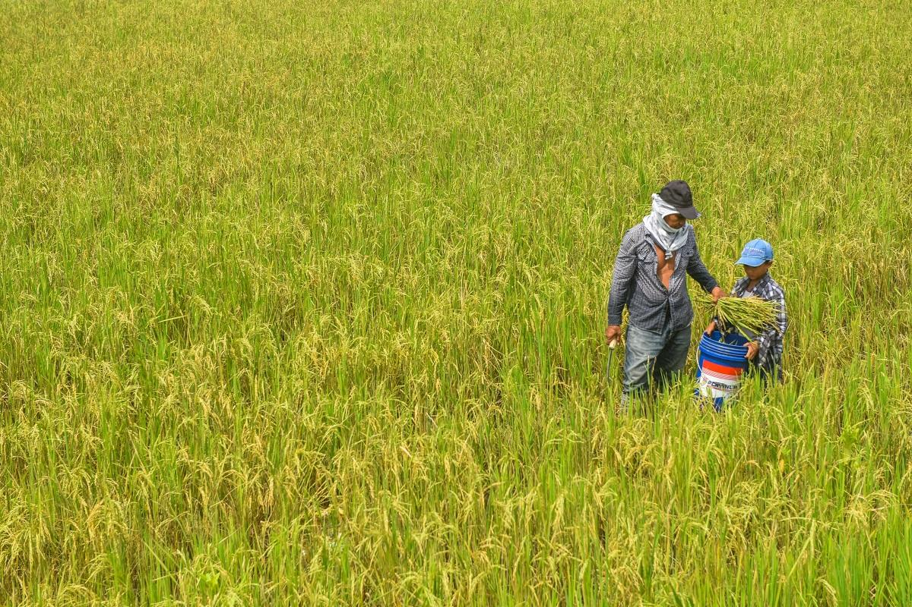

Published January 30, 2024
The Philippine agricultural output posted a slight rebound in 2023 after contracting for the past three years, but still below the Department of Agriculture’s (DA) target, data released by the government on Tuesday showed.
Data from the Philippine Statistics Authority (PSA) showed that the value of production in agriculture and fisheries grew by 0.7% in the last three months of 2023, on the back of higher production of crops, livestock, and poultry.
The value of crop production rose by 0.1%, with palay production up by 0.1%. The biggest increases were seen in the production of mango up 11.4%, calamansi by 4.0%, pineapple by 3.8%, onion by 3.4%, and ampalaya by 3.2%.
Livestock production expanded by 2.7%, as hog production went up by 3.7%, goat production by 1.3%, and dairy production by 17.2%. Declines were reported in the production of cattle and carabao.
Poultry production likewise saw an increase in the value of production at 7.8%, as all commodities posted growth —chicken by 8.1%, chicken eggs by 7.8%, duck by 0.6%, and duck eggs by 0.3%.
The latest performance marks the first growth in four years after the -0.1% in 2022, -1.7% in 2021, and -1.2% in 2020.
Fisheries was the only subsector that saw a contraction, as its value of production fell by 5.2%.
The biggest drops were in fimbriated sardines (tunsoy) down 34.2%, threadfin bream (bisugo) by 31.6%, blue crab (alimasag) by 31.2%, tiger prawn (sugpo) by 15.4%, and cavalla (talakitok) by 2.6%.
Meanwhile, the value of crop production expanded by 0.7%, as the volume of palay (unmilled rice) produced for the year stood at 20.059 million metric tons (MT), in line with projections made by the DA.
Livestock production rose by 2.5% and poultry production by 3.8%, while fisheries contracted by 6.5%.
The full-year value of production in agriculture and fisheries expanded by 0.4%, lower than the DA’s 2.3% to 2.5% target for 2023.
GMA News Online has reached out to the DA for comment on the matter, but no response has been received as of this posting. –VAL, GMA Integrated News